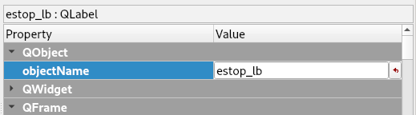
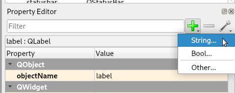
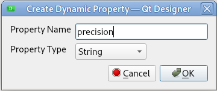
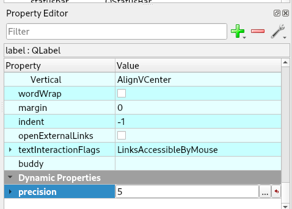
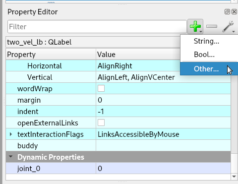
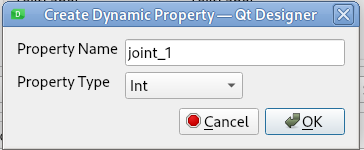
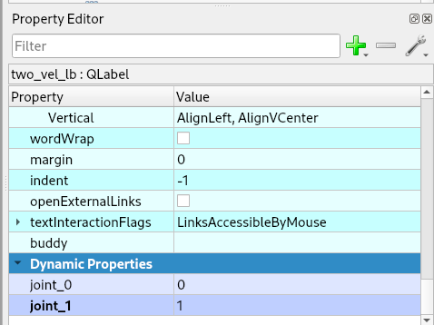

Status Labels¶
Status labels are created using a QLabel and setting the Object Name. Status labels come in two forms. A single-status-label like Machine Status only contains one piece of information, such as OFF, RUN, etc.
A multiple-status-label like the axis or joint dictionaries have multiple items and displays for all joints. Multiple-status-labels use a number identifier to select the axis, joint, or spindle information wanted.
When creating a status label, set the objectName to the status you want to display
Precision¶
Labels that return float values default to 3 decimal places for metric and 4 for inch.
To override the default, select the label then click on the Green Plus sign in the Property Editor to add a Dynamic Property and select String. See Dynamic Properties
Set the Property Name to precision:
Set the Value to how many decimal places you want for that status label
For more information about status labels read the LinuxCNC Python Interface Status Attributes
Status Labels¶
Status Labels are created by adding a QLabel and changing the Object Name to one of the following. Some status labels use a dictionary to look up the name instead of displaying the integer the name is displayed.
acceleration_lb - returns float
reflects the INI entry [TRAJ]DEFAULT_LINEAR_ACCELERATION, if that entry is not
found it returns 1e+99
active_queue_lb - returns integer
number of motions blending
actual_position_lb - returns tuple of floats
current trajectory position, (x y z a b c u v w) in machine units
See the Axis Position labels for individual axis positions.
adaptive_feed_enabled_lb - returns boolean
status of adaptive feedrate override
ain_lb - returns tuple of floats
current value of the analog input pins
angular_units_lb - returns float - precision can be set
machine angular units per deg, reflects [TRAJ]ANGULAR_UNITS
aout_lb - returns tuple of floats
current value of the analog output pins
axis_lb - returns tuple of dicts
reflecting current axis values
axis_mask_lb - returns integer
sum of the axes by [TRAJ]COORDINATES X=1, Y=2, Z=4, A=8, B=16, C=32, U=64, V=128, W=256
block_delete_lb - returns boolean
block delete current status
call_level_lb - returns integer
current subroutine depth. - 0 If not in a subroutine
command_lb - returns string
currently executing command
current_line_lb - returns integer
currently executing line
current_vel_lb - returns float - precision can be set
current velocity in user units per second
cycle_time_lb - returns float - precision can be set
thread period
debug_lb - returns integer
debug flag from the INI file
delay_left_lb - returns float - precision can be set
remaining time on G4 dwell command in seconds
din_lb - returns tuple of integers
current value of the digital input pins
distance_to_go_lb - returns float - precision can be set
remaining distance of current move as reported by trajectory planner
echo_serial_number_lb - returns integer
The serial number of the last completed command sent by a UI to task.
All commands carry a serial number. Once the command has been executed,
its serial number is reflected in echo_serial_number
enabled_lb - returns boolean
trajectory planner enabled flag
estop_lb - returns integer
Returns either STATE_ESTOP = 1) or not = 0)
exec_state_lb - returns integer that is used to lookup the state name.
task execution state. One of EXEC_ERROR = 1, EXEC_DONE = 2,
EXEC_WAITING_FOR_MOTION = 3, EXEC_WAITING_FOR_MOTION_QUEUE = 4,
EXEC_WAITING_FOR_IO = 5, EXEC_WAITING_FOR_MOTION_AND_IO = 7,
EXEC_WAITING_FOR_DELAY = 8, EXEC_WAITING_FOR_SYSTEM_CMD = 9,
EXEC_WAITING_FOR_SPINDLE_ORIENTED = 10).
feed_hold_enabled_lb - returns boolean
enable flag for feed hold
feed_override_lb - returns boolean
enable flag for feed override
file_lb - returns string
currently loaded G-code filename with path
flood_lb - returns integer that is used to lookup the state of OFF or ON
Flood status, either FLOOD_OFF = 0) or FLOOD_ON = 1)
g5x_index_lb - returns integer that is used to lookup the coordinate system name
currently active coordinate system, G54=1, G55=2 etc
g5x_offset_lb - returns tuple of floats
offsets of the currently active coordinate system X, Y, Z, U, V, W, A, B, C
gcodes_lb - returns tuple of integers
Active G-codes for each modal group.
The integer values reflect the nominal G-code numbers multiplied by 10.
(Examples: 10 = G1, 430 = G43, 923 = G92.3)
homed - returns tuple of integers
currently homed joints, 0 = not homed, 1 = homed
See the Axis Homed labels for individual axis home status.
id - returns integer
currently executing motion id
ini_filename_lb - returns string
path to the INI file passed to linuxcnc
inpos_lb - returns boolean
machine-in-position flag
input_timeout_lb - returns boolean
flag for M66 timer in progress
interp_state_lb - returns integer that is used to lookup the state name
current state of RS274NGC interpreter. One of INTERP_IDLE = 1,
INTERP_READING = 2, INTERP_PAUSED = 3, INTERP_WAITING = 4
interpreter_errcode_lb - returns integer that is used to lookup the error name
current RS274NGC interpreter return code
INTERP_OK = 0,
INTERP_EXIT = 1,
INTERP_EXECUTE_FINISH = 2,
INTERP_ENDFILE = 3,
INTERP_FILE_NOT_OPEN = 4,
INTERP_ERROR = 5
joint - returns tuple of dicts
reflecting current joint values
See the Joint Status labels for individual joint status items.
joint_actual_position - returns tuple of floats
actual joint positions
joint_position - returns tuple of floats
desired joint positions
joints_lb - returns integer
number of joints. Reflects [KINS]JOINTS INI value
kinematics_type_lb - returns integer that is used to lookup the kinematics name
The type of kinematics
KINEMATICS_IDENTITY = 1
KINEMATICS_FORWARD_ONLY = 2
KINEMATICS_INVERSE_ONLY = 3
KINEMATICS_BOTH = 4
limit - returns tuple of integers
axis limit masks. minHardLimit=1, maxHardLimit=2, minSoftLimit=4, maxSoftLimit=8
linear_units_lb - returns float - precision can be set
machine linear units per mm, reflects [TRAJ]LINEAR_UNITS INI value
lube_lb - returns integer
lube on flag
lube_level_lb - returns integer
reflects iocontrol.0.lube_level
max_acceleration_lb - returns float - precision can be set
maximum acceleration. Reflects [TRAJ]MAX_ACCELERATION
max_velocity_lb - returns float - precision can be set
maximum velocity. Reflects the current maximum velocity. If not modified by
halui.max-velocity or similar it should reflect [TRAJ]MAX_VELOCITY
min_jog_vel_lb - returns int
minimum jog velocity slider setting. Reflects the [DISPLAY] MIN_LINEAR_VELOCITY
setting in user units per minute.
max_jog_vel_lb - returns int
maximum jog velocity slider setting. Reflects the [DISPLAY] MAX_LINEAR_VELOCITY
setting in user units per minute.
mcodes_lb - returns tuple of 10 integers
currently active M-codes
mist_lb - returns integer
Mist status, either MIST_OFF = 0 or MIST_ON = 1
motion_line_lb - returns integer
source line number motion is currently executing
motion_mode_lb - returns integer that is used to lookup the motion mode name
This is the mode of the Motion controller.
TRAJ_MODE_FREE = 1
TRAJ_MODE_COORD = 2
TRAJ_MODE_TELEOP = 3
motion_type_lb - returns integer that is used to lookup the motion type name
The type of the currently executing motion. One of:
MOTION_TYPE_TRAVERSE = 1
MOTION_TYPE_FEED = 2
MOTION_TYPE_ARC = 3
MOTION_TYPE_TOOLCHANGE = 4
MOTION_TYPE_PROBING = 5
MOTION_TYPE_INDEXROTARY = 6
Or 0 if no motion is currently taking place.
optional_stop_lb - returns integer
option stop flag
paused_lb - returns boolean
motion paused flag
pocket_prepped_lb - returns integer
A Tx command completed, and this pocket is prepared. -1 if no prepared pocket
position - returns tuple of floats
trajectory position
probe_tripped_lb - returns boolean
True if probe has tripped
probe_val_lb - returns integer
reflects value of the motion.probe-input pin
probed_position_lb - returns tuple of floats
position where probe tripped
probing_lb - returns boolean
True if a probe operation is in progress
program_units_lb - returns integer that is used to lookup the units name
CANON_UNITS_INCHES = 1,
CANON_UNITS_MM = 2,
CANON_UNITS_CM = 3
queue_lb - returns integer
current size of the trajectory planner queue
queue_full_lb - returns boolean
the trajectory planner queue is full
rapid_override_lb - returns percent
rapid override percent
rapidrate_lb - returns float - precision can be set
rapid override scale, 1.0 = 100%
read_line_lb - returns integer
line the RS274NGC interpreter is currently reading
rotation_xy_lb - returns float - precision can be set
current XY rotation angle around Z axis
settings_lb - returns tuple of floats
current interpreter settings
settings[0] = sequence number
settings[1] = feed rate
settings[2] = speed
settings[3] = G64 P blend tolerance
settings[4] = G64 Q naive CAM tolerance
spindles_lb - returns tuple of dicts
returns the current spindle status
state_lb - returns integer that is used to lookup the state name
current command execution status
One of RCS_DONE = 1, RCS_EXEC = 2, RCS_ERROR = 3
task_mode_lb - returns integer that is used to lookup the task mode name
current task mode
One of MODE_MANUAL = 1, MODE_AUTO = 2, MODE_MDI = 3
task_paused_lb - returns integer
task paused flag, not paused = 0, paused = 1
task_state_lb - returns integer that is used to lookup the task state name
current task state
One of STATE_ESTOP = 1, STATE_ESTOP_RESET = 2, STATE_OFF = 3 STATE_ON = 4
STATE_OFF is never seen
tool_in_spindle_lb - returns integer
current tool number in spindle (0 if no tool loaded)
tool_from_pocket_lb - returns integer
pocket number for the currently loaded tool (0 if no tool loaded)
tool_offset_lb - returns tuple of floats
offset values of the current tool
tool_table_lb - returns tuple of tool_results
list of tool entries. Each entry is a sequence of the following fields: id,
xoffset, yoffset, zoffset, aoffset, boffset, coffset, uoffset, voffset,
woffset, diameter, frontangle, backangle, orientation. The id and orientation
are integers and the rest are floats.
If id = -1 no tools are in the tool table.
Note
You don’t have to use all the labels; only use the ones you need.
Axis Status¶
The Axis status contains status items for all 9 axes. Replace the n with the number of the axis. Axis numbers start at 0 and go through 8. Returns a float
axis_n_max_position_limit_lb |
axis_n_min_position_limit_lb |
axis_n_velocity_lb |
axis_n_vel_per_min_lb |
Note
The Axis velocity label only reports back jogging speed; use the joint velocity label for linear speed.
Joint Status Labels¶
The Joint status contains status items for 16 joints. Replace the n with the number of the joint. Joint numbers start at 0 and go through 15
joint_backlash_n_lb |
joint_input_n_lb |
joint_min_position_limit_n_lb |
joint_enabled_n_lb |
joint_jointType_n_lb |
joint_in_soft_limit_n_lb |
joint_fault_n_lb |
joint_max_ferror_n_lb |
joint_output_n_lb |
joint_ferror_current_n_lb |
joint_max_hard_limit_n_lb |
joint_override_limits_n_lb |
joint_ferror_highmark_n_lb |
joint_max_position_limit_n_lb |
joint_units_n_lb |
joint_homed_n_lb |
joint_max_soft_limit_n_lb |
joint_vel_sec_n_lb |
joint_vel_min_n_lb |
joint_homing_n_lb |
joint_min_ferror_n_lb |
joint_inpos_n_lb |
joint_min_hard_limit_n_lb |
Special Labels¶
Run from line label start_line_lb
Axis Position Labels¶
Axis machine position labels (no offsets.) Returns a float
actual_lb_x |
actual_lb_y |
actual_lb_z |
actual_lb_a |
actual_lb_b |
actual_lb_c |
actual_lb_u |
actual_lb_v |
actual_lb_w |
Axis position labels including all offsets. Returns a float
dro_lb_x |
dro_lb_y |
dro_lb_z |
dro_lb_a |
dro_lb_b |
dro_lb_c |
dro_lb_u |
dro_lb_v |
dro_lb_w |
Axis Distance to Go labels¶
dtg_lb_x |
dtg_lb_y |
dtg_lb_z |
dtg_lb_a |
dtg_lb_b |
dtg_lb_c |
dtg_lb_u |
dtg_lb_v |
dtg_lb_w |
Axis Homed Labels¶
home_lb_0 |
home_lb_1 |
home_lb_2 |
home_lb_3 |
home_lb_4 |
home_lb_5 |
home_lb_6 |
home_lb_7 |
home_lb_8 |
Offset Labels¶
Offsets for the currently active G5x coordinate system. Returns a float
g5x_lb_x |
g5x_lb_y |
g5x_lb_z |
g5x_lb_a |
g5x_lb_b |
g5x_lb_c |
g5x_lb_u |
g5x_lb_v |
g5x_lb_w |
Offsets for G92. Returns a float
g92_lb_x |
g92_lb_y |
g92_lb_z |
g92_lb_a |
g92_lb_b |
g92_lb_c |
g92_lb_u |
g92_lb_v |
g92_lb_w |
Velocity Labels¶
Tool velocity using two perpendicular joint velocities.
Name the label two_vel_lb and add two int type Dynamic Properties called joint_0 and joint_1 and set the values to the perpendicular joint numbers you want to calculate. Typically this would be for the X and Y axes.
To select an int type of Dynamic Property, select Other after clicking on the green plus sign
Then select the Property Type of int
The two Dynamic Properties should look like this
Tool velocity using three perpendicular joint velocities.
Name the label three_vel_lb and add three int type Dynamic Properties called joint_0, joint_1 and joint_2 and set the values to the perpendicular joint numbers you want to calculate. Typically this would be for the X, Y and Z axes.
I/O Status¶
The I/O status contains status items for 64 I/O’s. Replace the n with the number of the I/O. I/O numbers start at 0 and go through 63. Analog I/O returns a float. For example a QLabel with an object name of din_5_lb will show the status of the motion.digital-in-05 HAL pin
HAL Pin |
Label Name |
motion.analog-in-nn |
ain_n_lb |
motion.analog-out-nn |
aout_n_lb |
motion.digital-in-nn |
din_n_lb |
motion.digital-out-nn |
dout_n_lb |